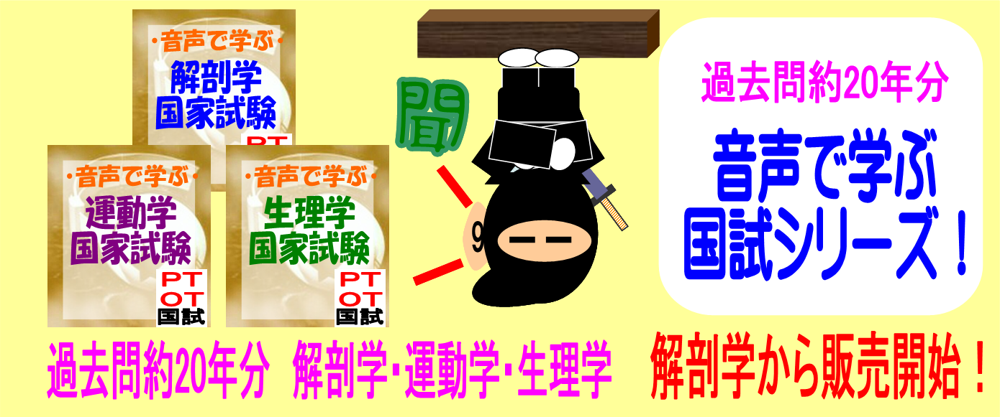
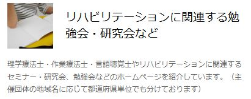
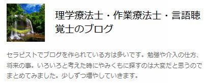

最新情報
-
オリジナル商材のご案内
音声で学ぶ筋肉の付着と作用 -
2014年11月11日
LINE国試学生グループトーク開始！ -
2014年7月25日
LINEで国試開始！ -
2014年5月27日
PT・OT・STの働き方・学び方発見サイト「POST」と連携致します！
在宅医療・在宅介護のメディアサイト CoMedi【コメディ】
- 在宅医療・在宅介護のメディアサイト CoMedi【コメディ】は、在宅医療・介護の現場を明るく、楽しくお届けするメディアサイトです。
主に地域で活躍するコメディカル職と何かしらの障がいを持った当事者らが、お役立ち情報を発信しています。
音声で学ぶシリーズ
音声で学ぶシリーズ
- 音声で学ぶ国家試験 解剖学
- 音声で学ぶ国家試験 生理学
- 音声で学ぶ国家試験 運動学
- 音声で学ぶ国家試験シリーズパック
- 国家試験を耳で聞いて学ぶ！
療法士関連NAVERまとめ
 fecebookでも問題配信中
- サブコンテンツ
-